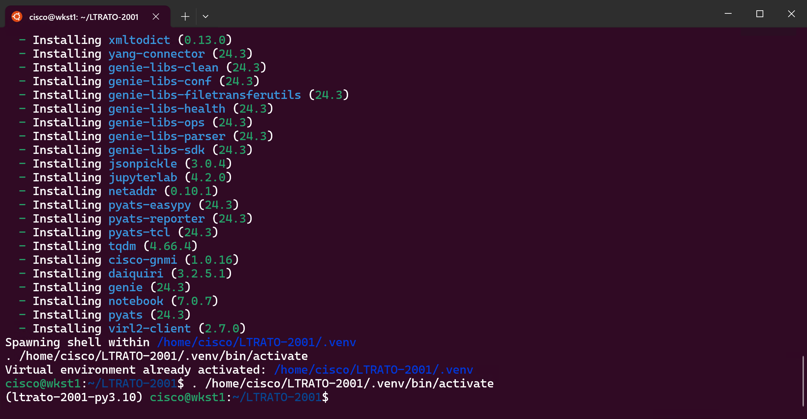

Step 1: Explore Lab Structure¶
Value Proposition: Develop a comprehensive understanding of the lab’s virtual environment architecture, facilitating seamless integration and utilization of Python and pyATS tools, enabling streamlined automation, efficient dependency management, and project isolation for enhanced productivity and consistency across scripting workflows.
On the remote desktop, click the
Terminalshortcut on the toolbar, once the terminal opens, on the dropdown icon, selectubuntu.Ubuntu will run on our RDP Jumphost on top of Windows 10. In addition, the bash Linux shell will appear.
Note
It can take a few seconds while the packages required for the lab are installed.
Throughout the lab, you will be working from a virtual environment. The virtual environment provides the following significant advantages over running Python scripts globally:
Project Isolation: Avoids installing Python packages globally, which could break system tools or other projects.
Dependency Management: Makes the project self-contained and reproducible by capturing all package dependencies in a requirements file.
Cisco recommends you run pyATS scripts from the virtual environment. Therefore, the keyword (pyats) at the beginning of each line indicates that you are working from a virtual environment.
Make sure that you are within the
/home/cisco/LTRATO-2001directory, which contains the necessary lab files, otherwise you can switch to the appropriate directory by executing the following command:cd ~/LTRATO-2001Check the directory structure.
ls -l
Check the list of files and refer to the description of each file depicted in the table below.
Note
The following files are in the LTRATO-2001 directory and will be used throughout the lab.
Filename
Description
pyats_testbed.yaml
Testbed file for pyATS (in YAML)
task2step1.py
The task for collection of show commands
task2step2.py
The initial task for pyATS exploration
task3step1a.py
Test to verify log messages (asav-1 only)
task3step1b.py
Test to verify log messages (all devices)
task3step2.py
Test to verify service contracts coverage
task3step3.py
Test to verify routing information
task3step4.py
Test to verify reachability between devices (ping)
task4step1.py
pyATS job file to run tests from
{kind=link}
Section author: Luis Rueda <lurueda@cisco.com>, Jairo Leon <jaileon@cisco.com>